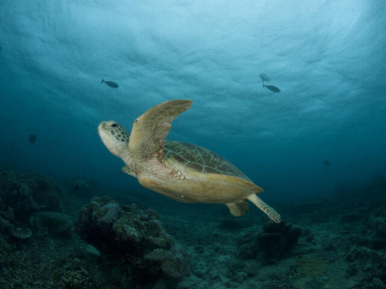
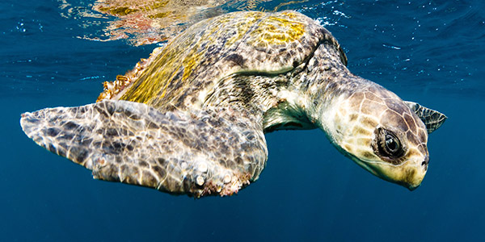

Turtle Categories
Sri Lanka

Sri Lanka
Among the 250 species of turtles on Earth, seven of them live in the ocean (called sea turtles), and the remaining 243 species live on land (terrestrial turtles called tortoises) or in freshwater ponds and marshes. Five of the seven species of sea turtles – the Green Turtle (Chelonia mydas), Hawksbill Turtle (Eretmochelys imbricata), Olive Ridley (Lepidochelys olivacea), Loggerhead (Caretta caretta) and Leatherback (Dermochelys coriacea) – visit the Sri Lankan shores to nest. Three species of freshwater turtles – Parker’s Black Turtle (Melanochelys trijuga pakeri) Sri Lanka Black Turtle (Melanochelys trijuga thermalis) and the Soft or Flapshell turtle (Lissemys punctata punctata) – and one terrestrial tortoise, the Star tortoise (Geochelone elegans), can also be found in Sri Lanka.
 The green sea turtle (Chelonia mydas), also known as the green turtle, black (sea) turtle or Pacific green turtle,is a species of large sea turtle of the family Cheloniidae. It is the only species in the genus Chelonia.Its range extends throughout tropical and subtropical seas around the world, with two distinct populations in the Atlantic and Pacific Oceans, but it is also found in the Indian Ocean.
The green sea turtle (Chelonia mydas), also known as the green turtle, black (sea) turtle or Pacific green turtle,is a species of large sea turtle of the family Cheloniidae. It is the only species in the genus Chelonia.Its range extends throughout tropical and subtropical seas around the world, with two distinct populations in the Atlantic and Pacific Oceans, but it is also found in the Indian Ocean.
 The hawksbill sea turtle (Eretmochelys imbricata) is a critically endangered sea turtle belonging to the family Cheloniidae. It is the only extant species in the genus Eretmochelys. The species has a global distribution, that is largely limited to tropical and subtropical marine and estuary ecosystems.
The hawksbill's appearance is similar to that of other marine turtles.
The hawksbill sea turtle (Eretmochelys imbricata) is a critically endangered sea turtle belonging to the family Cheloniidae. It is the only extant species in the genus Eretmochelys. The species has a global distribution, that is largely limited to tropical and subtropical marine and estuary ecosystems.
The hawksbill's appearance is similar to that of other marine turtles.
 The olive ridley sea turtle (Lepidochelys olivacea), also known commonly as the Pacific ridley sea turtle, is a species of turtle in the family Cheloniidae. The species is the second-smallest and most abundant of all sea turtles found in the world. L. olivacea is found in warm and tropical waters, primarily in the Pacific and Indian Oceans, but also in the warm waters of the Atlantic Ocean.
The olive ridley sea turtle (Lepidochelys olivacea), also known commonly as the Pacific ridley sea turtle, is a species of turtle in the family Cheloniidae. The species is the second-smallest and most abundant of all sea turtles found in the world. L. olivacea is found in warm and tropical waters, primarily in the Pacific and Indian Oceans, but also in the warm waters of the Atlantic Ocean.
 The loggerhead sea turtle (Caretta caretta) is a species of oceanic turtle distributed throughout the world. It is a marine reptile, belonging to the family Cheloniidae. The average loggerhead measures around 90 cm (35 in) in carapace length when fully grown. The adult loggerhead sea turtle weighs approximately 135 kg (298 lb), with the largest specimens weighing in at more than 450 kg (1,000 lb). The skin ranges from yellow to brown in color, and the shell is typically reddish brown.
The loggerhead sea turtle (Caretta caretta) is a species of oceanic turtle distributed throughout the world. It is a marine reptile, belonging to the family Cheloniidae. The average loggerhead measures around 90 cm (35 in) in carapace length when fully grown. The adult loggerhead sea turtle weighs approximately 135 kg (298 lb), with the largest specimens weighing in at more than 450 kg (1,000 lb). The skin ranges from yellow to brown in color, and the shell is typically reddish brown.
 The leatherback sea turtle (Dermochelys coriacea), sometimes called the lute turtle or leathery turtle or simply the luth, is the largest of all living turtles and the heaviest non-crocodilian reptile, reaching lengths of up to 1.8 metres (5 ft 11 in) and weights of 500 kilograms (1,100 lb).[5][6] It is the only living species in the genus Dermochelys and family Dermochelyidae. It can easily be differentiated from other modern sea turtles by its lack of a bony shell; instead, its carapace is covered by oily flesh and flexible, leather-like skin, for which it is named
The leatherback sea turtle (Dermochelys coriacea), sometimes called the lute turtle or leathery turtle or simply the luth, is the largest of all living turtles and the heaviest non-crocodilian reptile, reaching lengths of up to 1.8 metres (5 ft 11 in) and weights of 500 kilograms (1,100 lb).[5][6] It is the only living species in the genus Dermochelys and family Dermochelyidae. It can easily be differentiated from other modern sea turtles by its lack of a bony shell; instead, its carapace is covered by oily flesh and flexible, leather-like skin, for which it is named
 |
 |
|
| Image | Type | Lifespan | Food | Other Facts |
|  | The Green Turtle | 70 years or more | algae,seagrasses | herbivores |
 |
Hawksbill Turtle | 50-60 years | Sea Sponges | mottled shells |
|  | Olive Ridley Turtle | 50 years | algae, lobster, crabs, tunicates, mollusks, shrimp, and fish. | visible claws |
 |
Loggerhead Turtle | 70-80 years | whelks, other mollusks, horseshoe crabs | large heads |
 |
Leatherback Turtle | 45-50 years | jellyfish,sea squirts | firm, leathery skin |